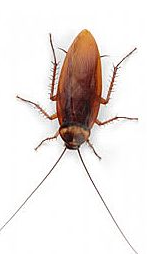
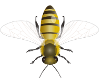
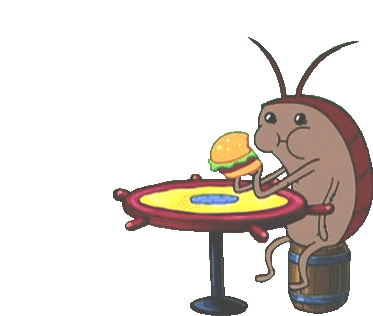

Выберите опцию:
При старте игры на поле в произвольном порядке и количестве появлются тараканы и пчелы.
Задача игрока прихлопнуть как можно больше тараканов, при этом не убив ни одной пчелы.
Игра заканчивается в случае, если игрок не убил таракана и таракан дошел до конца поля или же, если игрок убил пчелу.

таракана надо убить

пчелу надо пощадить
Наименование игры – «Тараканы!». Браузерная или мобильная игра-кликер, заключающаяся в том,
что игрок должен раздавить тараканов,
появляющихся на поле.
Убить таракана – не сложная игра на реакцию, главной целью которой является убийство тараканов за получение очков или за время.
Вариантов реализации этой игры достаточно много, что дает возможность разработчикам творить.
